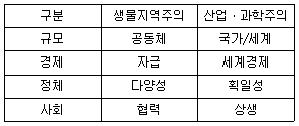
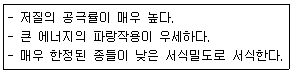
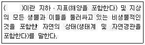
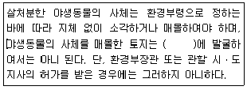
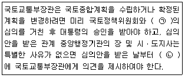
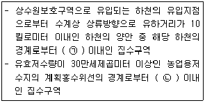

자연생태복원기사(구) (2019-03-03 기출문제)
1과목: 환경생태학개론
1. 개체군의 특성에 관한 설명 중 틀린 것은?
- 일시적이며 기하급수적이고 무제한으로 성장 하는 것을 지수함수형(J형)이라 한다.
- 밀도의 증가에 따라 제한요인의 작용으로 성장률이 감소하는 경우 시그모이드형(S형)이라 한다.
- 일시적이며 불안정하고 변동하기 쉬운 서식지에서는 r-선택이 이루어지며 개체군 내부 밀도의 영향을 받는다.
- K-선택은 환경수용능력에 가깝게 성장하는 안정한 서식지의 개체군에서 이루어지며, 극상림과 같은 안정된 상태에서 나타난다.
(정답률: 68%)

2. 식물에 의해 단위시간, 단위면적당 만들어지는 생체량은? (단, 단위로는 에너지단위(calㆍm-2ㆍday-1)나 무게(gCㆍm-2ㆍy-1)를 사용한다.)
- 1차 생산력(Primary productivity)
- 2차 생산력(Secondary productivity)
- 영양단계(Trophic level)
- 현존량(Standing crop)
(정답률: 77%)
3. 생태계의 먹이연쇄에 관한 설명으로 틀린 것은?
- 영양단계의 분류는 종의 분류로 이루어진다.
- 천이 초기의 먹이연쇄는 단순하고 직선적인 경향이 있다.
- 먹이연쇄에 있어서 각 이동단계마다 일정부분의 잠재에너지가 열로 사라진다.
- 먹이연쇄에서 상부 영양단계로 이동할 때마다 약 90%의 에너지가 소실된다.
(정답률: 61%)
4. 습지보전 대책으로서 국제적으로 중요한 습지, 특히 물새 서식지에 관한 국제적인 협약으로서 이란에서 채택되어 발효된 협약은?
- 람사르 협약
- 헬싱키 협약
- 몬트리올 협약
- 나이로비 협약
(정답률: 94%)
5. 수계생태계를 이루고 있는 생물적 부분을 생활형에 따라 구분한 것으로 해당하지 않는 것은?
- 플랑크톤
- 척추동물
- 유영동물
- 저서동물
(정답률: 81%)
6. 환경오염문제를 발생시키는 인간의 활동에 대한 설명 중 틀린 것은?
- 환경문제 저감기술 개발보다는 산업생산기술 개발에 더 관심을 가져야 한다.
- 과학기술은 산업과 생산성 향상에 엄청난 효과를 가지고 왔지만, 환경오염의 가속화와 질적 악화를 동시에 가져왔다.
- 산업화에 따른 환경오염으로 인해 온실효과를 일으키는 이산화탄소량의 증가, 오존층의 파괴, 열대수림의 파괴, 생물 멸종 등 자연환경의 파괴가 진전되고 있다.
- 산업화 이전에는 환경 자정능력으로 정화되었지만, 산업혁명 이후 고도의 경제성장은 자정능력을 넘는 대기오염물질과 폐수 및 폐기물을 배출하여 오염을 가속화 시키고 있다.
(정답률: 94%)
7. CFCs(염화불화탄소)에 대한 설명으로 틀린 것은?
- 불연성이다.
- 독성과 자극이 없다.
- 불안정한 화합물이다.
- 염소, 불소, 탄소를 함유한 합성화합물질이다.
(정답률: 65%)
8. 뿌리를 토양에 내리고 잎을 수면에 띄우는 수생식물에 해당하는 습지식물은?
- 갈대
- 검정말
- 어리연꽃
- 개구리밥
(정답률: 76%)
9. 호수에서 생산자 역할을 하는 것끼리 바르게 나열된 것은?
- 남조류, 녹조류, 어류
- 수초, 녹조류, 파충류
- 규조류, 녹조류, 양서류
- 대형수초, 규조류, 녹조류
(정답률: 89%)
10. 녹색식물 광합성 작용의 생화학적 공식은?
- H2O+CO2+일광에너지→(CH2O)n+O2
- H2O+CO2+일광에너지→(CH2O)n+O3
- H2O+CO2+일광에너지→(CH3O)n+O2
- H2O+CO2+일광에너지→(CH3O)n+O3
(정답률: 75%)
11. 동일한 시기에 식재하여 조성된 인공림의 생태적 특성에 관한 설명 중 틀린 것은?
- 임관이 폐쇄단계에 이르러 햇빛 환경이 악화되면 하층식생인 초본층이 발달하게 되어 수목공간 및 계층구조가 복잡해진다.
- 같은 나이의 일체림이기 때문에 천연림과 같이 대형의 고립목이나 넘어진 나무가 거의 존재하지 않아 천연림이 가지는 생태적 기능을 잃어버리게 된다.
- 인공림의 생태계는 빈약한 임상식생을 이루게 되므로 강우 시 토양유기물의 흐름을 쉽게 하여 임지의 지력 저하로 이어진다.
- 인공림 내에서 낙엽이나 죽은 가지도 임상의 광ㆍ온도 환경에 영향을 받아 토양동물, 균류의 조성을 단순화시켜 유기물의 분해가 늦어지는 현상이 나타난다.
(정답률: 74%)
12. 생태학적 피라미드의 종류가 아닌 것은?
- 개체수 피라미드
- 생체량 피라미드
- 에너지 피라미드
- 환경요인 피라미드
(정답률: 76%)
13. 생태계 내 종 및 개체군 사이의 상호작용이 바르게 연결된 것은?
- 편해공생 - 상호관계는 서로에게 해를 끼침
- 편리공생 - 상호관계는 서로에게 균등하게 유익함
- 기생 - 어느 한 쪽에게는 유익하며 다른 한쪽에게는 해를 끼침
- 경쟁 - 각각의 종과 종 사이에 직접적 또는 간접적으로 영향이 없음
(정답률: 81%)
14. 시간이 경과함에 따라 생물군집이 연속적으로 변화하는 과정을 거친 후 도달하는 안정된 시기는?
- 극상
- 포식
- 경쟁
- 기생
(정답률: 94%)
15. 수질오염과 관련된 주요 폐수로 가장 거리가 먼 것은?
- 생활하수
- 계곡수
- 광산폐수
- 방사성폐수
(정답률: 91%)
16. 부영양화의 피해에 관한 설명으로 가장 거리가 먼 것은?
- 악취 발생
- 어패류 폐사
- 수중생태계 파괴
- 조류의 이상번식에 의한 투명도 증가
(정답률: 92%)
17. 미생물 또는 화산활동 및 번개의 방전 등에 의해 생태계에 유입되는 물질을 생성하는 생물지화학적 순환(biogeocheical cycle)은?
- 산소순환
- 질소순환
- 인순환
- 황순환
(정답률: 83%)
18. 주요 대기 오염물질 중 2차 오염물질로 볼 수 있는 것들로만 나열된 것은?
- 오존, 과산화수소, PANs, SO3
- 석면, 이산화질소, 오존, 사염화탄소
- 오존, 아황산가스, 메탄가스, PANs
- 일산화탄소, 수산화라디칼, 메탄가스, VOC
(정답률: 57%)
19. 생태적 동등종(ecological equivalent)의 설명으로 옳은 것은?
- 유전학적으로 비슷하지만 서식지가 다른 종들
- 유전학적으로 다르지만 서식지가 동일한 종들
- 유전학적으로 비슷하지만 다른 생태학 지위를 차지하는 종들
- 유전학적으로 다르지만 비슷한 역할이나 생태학 지위를 차지하는 종들
(정답률: 89%)
20. 생태계의 생물적 구성요소에 해당하지 않는 것은?
- 대기(atmosphere)
- 생산자(producer)
- 분해자(decomposer)
- 거대소비자(macroconsumer)
(정답률: 91%)
2과목: 환경계획학
21. 자연입지적 토지이용 유형과 기본 방향의 연결이 틀린 것은?
- 산림ㆍ계곡환경 - 보전중심의 경관 관리
- 하천ㆍ호수환경 - 수변경관 중심의 대규모 관광 및 상업지역 조성
- 역사ㆍ문화환경 - 역사ㆍ문화 경관자원과 조화된 경관 형성
- 해안환경 - 자연환경오염의 최소화 및 공공기반 시설의 확충
(정답률: 75%)
22. 경관생태(Landscape Ecology)라는 용어를 가장 먼저 사용한 사람은?
- C.Troll
- L. Finke
- E. Haeckel
- I.S. Zonneveld
(정답률: 84%)
23. 전체 1km2의 개발대상지를 조사한 결과 논이 0.5km2, 20년 이상 된 2차림이 0.1km2, 과수원이 0.2km2, 잣나무 조림지가 0.2km2로 조사되었다. 이를 바탕으로 녹지자연도를 작성하였을 때 5등급 이상에 해당하는 면적의 비율(%)은?
- 10
- 20
- 30
- 40
(정답률: 67%)
24. 생태도시건설을 위한 핵심 계획요소가 아닌 것은?
- 보행자 공간 네트워크화
- LPG, LNG 사용의 최소화 방안
- 오픈스페이스 확보를 위한 건물배치
- 주민참여에 의한 지역사회 활동 및 도시관리 유지방안
(정답률: 70%)
25. 도시가 외곽지역보다 기온이 1~4℃ 더 높고 도시기온의 등온선을 표시하면 도심부를 중심으로 섬의 등고선과 비슷한 형태를 나타내는 현상은?
- 바람통로
- 열대야현상
- 지구온난화
- 도시열섬현상
(정답률: 93%)
26. S.R.Arnstein은 시민의 영향력을 기준으로 참여수준을 3분류 8단계로 구분하였다. 다음 중 가장 효율적인 단계의 시민참여는?
- 치료
- 회유, 상담
- 시민통제ㆍ자치
- 정보제공, 교육
(정답률: 69%)
27. 다음의 생물지역주의와 산업ㆍ과학주의 패러다임 비교에서 그 연결이 맞지 않는 것은?

- 규모
- 경제
- 정체
- 사회
(정답률: 77%)
28. 우리나라의 용도지역체계에 대한 설명으로 틀린 것은?
- 우리나라의 4대 용도지역은 도시지역, 관리지역, 농림지역, 자연환경보전지역으로 나뉘어진다.
- 도시지역은 인구와 산업이 밀집되어 있거나 밀집이 예상되는 지역에 체계적인 개발ㆍ정비ㆍ관리ㆍ보전 등이 필요한 지역이다.
- 농림지역은 도시지역에 속하지 아니하는 농지법에 의한 농업진흥지역 또는 산림법에 의한 보전임지 등으로서 농림업의 진흥과 산림의 보전을 위하여 필요한 지역이다.
- 우리나라의 용도지역체계는 환경정책기본법에 의해 지정되는 40개의 용도지역으로 나누어진다.
(정답률: 73%)
29. 지속가능성의 단계 중 환경교육 프로그램을 체계화하고, 지역발전을 위한 지방정부의 주도적 역할을 강조하는 단계에 해당되는 것은?
- 아주 약한 지속가능성
- 약한 지속가능성
- 보통의 지속가능성
- 강한 지속가능성
(정답률: 75%)
30. 정부와 시민사회가 협력하여 환경문제 등의 사회문제를 해결하는 것을 의미하는 활동은?
- 환경 거버넌스(governance)
- 환경 비정부기구(NGO)
- 환경 옴부즈만(ombudsman)
- 환경 비이익단체(NPO)
(정답률: 80%)
31. 옴부즈만(ombudsman) 제도의 기능과 거리가 먼 것은?
- 갈등해결 기능
- 국가재정확보 기능
- 국민의 권리구제 기능
- 사회적 이슈의 제기 및 행정정보 공개 기능
(정답률: 84%)
32. 맹꽁이의 서식처 특성 및 조건을 이용하여 대체습지를 조성할 때의 원칙으로 적절하지 않은 것은?
- 대체습지 가장자리의 수심은 0~30cm 정도로 조성한다.
- 대체습지의 규모는 크게는 50m2에서 작게는 30m2정도로 한다.
- 대체습지의 가장 깊은 수심은 200~250cm 정도로 만들어 준다.
- 대체습지의 중간에는 양서류가 휴식을 취할 수 있는 구릉을 초지와 함께 조성한다.
(정답률: 75%)
33. 환경지표의 개념에 대한 설명으로 틀린 것은?
- 환경에 대한 어떤 상태를 가능한 정량적으로 평가하는 것
- 정책 목표를 개략적으로 제시하고 정책 효과를 평가하는 기초가 되는 것
- 환경의 상태나 환경정책의 추진상황을 측정하는 것
- 환경 자료를 필요에 따라 가공하여 환경 현황이나 환경정책을 평가하는 재료로서 사용하는 것
(정답률: 58%)
34. 옥상녹화 및 벽면녹화로 인한 기대효과로 가장 거리가 먼 것은?
- 에너지 절약
- 도시환경 개선
- 소동물들의 서식처 제공
- 도시의 부족한 농업생산 공간 확보
(정답률: 86%)
35. 환경부장관은 자연환경보전기본계획의 시행성과를 몇 년마다 정기적으로 분석ㆍ평가하고 그 결과를 자연환경보전 정책에 반영하여야 하는가?
- 2년
- 3년
- 5년
- 10년
(정답률: 32%)
36. 생태네트워크의 개념으로 가장 적당한 것은?
- 개별적인 서식처와 생물종을 목적으로 하지 않고, 지역적인 맥락에서 모든 서식처와 생물종의 보전을 목적으로 하는 공간상의 계획이다.
- 지역적인 서식처와 개별적인 생물종을 목적으로 코리더에 의하여 핵심지역과 완충지역을 서로 연결하는 공간상의 계획이다.
- 개별적인 서식처와 생물종을 목적으로 하지 않고, 지역적인 맥락에서 특정 서식처와 생물종의 보전을 목적으로 하는 공간상의 계획이다.
- 지역적인 서식처와 생물종 보다는 개별적인 서식처와 생물종을 목적으로 코리더에 의하여 핵심지역과 완충지역을 서로 연결하는 공간상의 계획이다.
(정답률: 59%)
37. 사전환경성검토보다는 환경영향평가에서 주로 다루는 내용에 해당되는 것은?
- 입지의 타당성에 대한 평가
- 환경적 영향예측 및 저감방안 수립
- 부문별 계획 전반에 대한 정책영향평가
- 제안된 행정계획 등에 대하여 환경정책과의 조화성 분석
(정답률: 67%)
38. 토지의 일반적인 환경성평가 과정으로 옳은 것은?
- 환경적합성 분석 → 환경 기초조사 자료 → 환경성평가도 작성 → 보전적지 등급 분류
- 환경적합성 분석 → 환경 기초조사 자료 → 보전적지 등급 분류 → 환경성평가도 작성
- 환경 기초조사 자료 → 환경적합성 분석 → 환경성평가도 작성 → 보전적지 등급 분류
- 환경 기초조사 자료 → 환경적합성 분석 → 보전적지 등급 분류 → 환경성평가도 작성
(정답률: 61%)
39. 국가환경종합계획은 몇 년마다 수립해야 하는가?
- 5년
- 10년
- 15년
- 20년
(정답률: 65%)
40. 유엔환경계획의 환경범주는 대범주로서 자연환경과 인간환경으로 나누고 있다. 다음 중 자연환경의 하위범주에 속하는 것은?
- 인구
- 주거
- 수권
- 에너지
(정답률: 75%)
3과목: 생태복원공학
41. 잠재자연식생에 대한 설명으로 틀린 것은?
- 극상이 되기 이전단계의 식생구조를 의미한다.
- 대상식생과 자연식생의 종조성 등의 비교에 의해 추정한다.
- 현 시점에서의 토지에 대한 잠재적인 능력을 추정한다.
- 현존식생에 가해지는 인위성을 제거했을 경우 예상되는 자연식생의 모습이다.
(정답률: 69%)
42. 복원생태학에 대한 설명 중 틀린 것은?
- 복원생태학은 융복합 학문이다.
- 복원생태학은 문화적 복원을 포함하지 않는다.
- 보전생물학과 경관생태학은 복원생태학의 발전에 기여했다.
- 생태적 복원은 생태계를 복원하고 관리하는 실제 행위를 말한다.
(정답률: 91%)
43. 생태네트워크의 목적으로 가장 적합하지 않은 것은?
- 도시 내에 잠재하는 자연과 녹지를 연결하는 시스템
- 생물다양성을 유지하기 위한 계획
- 지역 전체의 생태적 환경 재생을 목표로 하는 계획
- 도시 내에 있는 비오톱을 개별적으로 관리함으로써 생물 서식환경을 보전ㆍ재생ㆍ창출 하는 것
(정답률: 77%)
44. 기후 인자에 대한 설명으로 틀린 것은?
- 해안은 내륙지방보다 더 습한 기후가 된다.
- 해안선에 가까울수록 온도의 계절적 변화는 크다.
- 육지가 흡수한 열은 낮 동안 지표면에 머물다 밤에 방출된다.
- 육지가 방출하는 열은 육지에서는 해양에 멀어질수록 변화가 커지고 가까울수록 변화가 작아진다.
(정답률: 70%)
45. 생태통로 조성절차에서 계획 및 설계 단계의 내용이 아닌 것은?
- 위치의 선정
- 유형의 선정
- 제원의 설정
- 유지관리방안 작성
(정답률: 78%)
46. 하천둑을 밑폭 5m, 위폭 2m, 높이 2m의 50m 연장둑을 조성하였을 때 취토 토사량(m3)은?
- 250
- 300
- 350
- 400
(정답률: 72%)
47. 수로단면적이 12m2이고, 윤주가 8m인 수로의 평균 깊이(m)는?
- 1.5
- 2
- 2.5
- 3
(정답률: 73%)
48. 생태숲 조성 시 고려사항으로 가장 적합하지 않은 것은?
- 서로 다른 유형의 숲을 조성할 경우는 가급적 직선형의 숲으로 경계부를 조성
- 여러 층위로 구성된 숲 조성
- 교목을 식재하는 지역에는 부분적인 마운딩을 조성
- 토양의 지하수위, 양분조건, 미기후 등을 고려한 식재
(정답률: 87%)
49. 벽면녹화를 한 후 유지 및 관리를 하는데 있어서 고려할 사항으로 가장 거리가 먼 것은?
- 비료주기
- 물주기
- 부유물질 제거
- 전정
(정답률: 69%)
50. 건축물이나 옹벽 등 인공벽면의 녹화 효과에 해당하지 않는 것은?
- 벽면의 차폐 효과
- 풍속의 약화 효과
- 돌담의 보강 및 도괴 방지 효과
- 건축물 표면의 균열방지 및 보호 효과
(정답률: 67%)
51. 생물종이 지리적으로 분산하는 세 가지 방식에 포함되지 않는 것은?
- 확산
- 도약분산
- 단절
- 영속이주
(정답률: 77%)
52. 생태계 내에 있는 모든 생물체는 서로 상호작용을 하고 있다. 서로 다른 두 개체군이 서로에게 이익이 되는 관계를 말한 것은?
- 기생
- 착생
- 공생
- 경쟁
(정답률: 94%)
53. 훼손지 복원 시 공중질소를 고정하는 근균과 공생하는 콩과식물을 도입함으로 토양환경의 개선을 도모할 수 있다. 훼손된 비탈면에 도입할 수 있는 콩과식물에 해당되지 않는 것은?
- 싸리나무
- 알팔파
- 오리나무
- 낭아초
(정답률: 60%)
54. 토양조사 항목에서 토양의 화학성을 나타내는 것은?
- 전기전도도
- 토성
- 토양수분함량
- 경도
(정답률: 67%)
55. 생태통로의 지능과 조성에 대한 설명 중 틀린 것은?
- 생태통로는 단편화된 생태계의 연결로 생태계의 연속성유지에 도움을 준다.
- 생태통로는 대형 교란으로부터 피난처 역할도 한다.
- 인공적으로 조성된 구조물은 생태통로라고 볼 수 없다.
- 하천, 댐, 도로 등에 의해 생태계가 단절되는 경우 생태통로를 조성한다.
(정답률: 90%)
56. 생태복원 성공여부의 평가기준과 가장 거리가 먼 것은?
- 지속가능성
- 생산성
- 귀화식물 우점도
- 생물학적 상호작용
(정답률: 75%)
57. 수목을 식재하기 전에 주는 슬러지는 질소질비료의 공급원으로서의 역할도 한다. 수분함유비율이 40%이고, 슬러지 건조물 중의 질소의 비가 5%, 질소 유효율이 40%인 슬러지를 사용함으로써 3kg/10ha의 질소시비효과를 기대할 경우, 사용하여야 할 슬러지의 양(kg/10ha)은?
- 250
- 500
- 750
- 1000
(정답률: 46%)
58. 야계사방공사(산지 소하천 정비공사)에서 둑쌓기공사의 설계요인에 대한 설명으로 틀린 것은?
- 둑마루선이란 둑의 바깥비탈면 머리를 연결하는 종방향의 선형을 말한다.
- 제방의 둑마루 너비는 계획홍수량이 2000m3/s 이상이면 5m 이상으로 한다.
- 제방의 여유높이는 계획홍수량에 따라 상이하나 계획홍수량이 200~500m3/s에서는 0.3m 이상으로 한다.
- 하천제방의 높이가 6m 이상일 경우 하천의 안쪽 중간에 너비 0.3m 정도의 소단을 둔다.
(정답률: 58%)
59. 산림식생복원 시 복원사면의 토양침식을 방지하고 반입토양의 안정화를 위해서 활엽수의 낙엽이나 나무껍질 등의 사면보호재료를 이용하는데, 이들 재료의 효과가 아닌 것은?
- 영양분 공급 효과
- 토양 미생물의 생육 억제 효과
- 사면토양의 보습, 보온 효과
- 외부잡초의 침입 견제 효과
(정답률: 90%)
60. 다음 식물 중 내건성이 가장 우수한 녹화용 식물은?
- Zoysia spp.
- Festuca spp.
- Sedum spp.
- Poa spp.
(정답률: 63%)
4과목: 경관생태학
61. 도시개발에서 자연보호와 종보호를 위한 지침에 관한 설명으로 적절하지 않은 것은?
- 오랫동안 동일한 환경 속에서 유지되었던 생태계는 우선적으로 보호되어야 한다.
- 도시개발에서 기존의 오픈스페이스와 생태계는 우선적으로 보호되어야 한다.
- 도시개발에서 기존의 비오톱을 보호하는 것보다는 새로운 비오톱의 조성이 더욱 중요하다.
- 도시 전체에서 비오톱 연결망을 구축하여 그 안에서 기존의 오픈스페이스가 연결되도록 한다.
(정답률: 87%)
62. 댐의 기능상 홍수 유출을 일시적으로 지체하여 갑작스런 홍수로 인한 피해를 막기 위한 댐으로 가장 적당한 것은?
- 지체댐
- 저수댐
- 취수댐
- 다목적댐
(정답률: 73%)
63. 경관생태학 연구의 특징이 아닌 것은?
- 단일생태계를 조사 대상으로 한다.
- 생태단위조각(patch)을 이용하여 정량적인 방법으로 표현한다.
- 인간의 역사 혹은 동물의 생활사 등을 생태학적으로 연구한다.
- 지역 경관의 이론 또는 방법론의 실제적 적용 가능성을 강조한다.
(정답률: 79%)
64. 등질지역과 결절지역에 대한 설명으로 틀린 것은?
- 등질지역은 동질적인(homogeneous) 성격을 갖는 공간을 의미한다.
- 결절지역은 이질적인(heterogeneous) 성격을 갖는 등질지역의 집합체이다.
- 일반적으로 지역은 공간범위를 바꾸면서 등질공간, 결절공간을 되풀이 한다.
- 수단으로서의 계획에서는 등질지역의 인식이 중시되는 한편, 목적으로서의 계획에서는 결절지역의 인식이 중요하다.
(정답률: 78%)
65. 원격탐사와 GIS를 경관생태학과 접목하여 가장 적절하게 활용할 수 있는 사례는?
- 생태이동통로의 적지 선정
- 환경영향평가에서의 경관 평가
- 해안갯벌의 서식처 보호구역 설정
- 쓰레기매립지의 생태공간계획 및 평가
(정답률: 65%)
66. 갯벌에 대한 간척 및 매립이 오래 전부터 시행되어 왔는데, 이로 인하여 발생된 문제점으로 볼 수 없는 것은?
- 농경지의 부족
- 수산자원의 감소
- 오염물 자정작용의 감소
- 수질악화로 인한 오염 발생
(정답률: 88%)
67. 환경영향평가의 현황조사는 생물서식공간을 중심으로 이루어지는 것이 바람직한데, 경관생태학적인 측면의 이유로 적당한 것은?
- 현황조사 시 조사자들의 편의를 도모할 수 있기 때문이다.
- 모든 주요 생물종은 특정한 생물서식공간에 서식하기 때문이다.
- 모든 생물서식공간은 습지를 중심으로 발달하므로 습지보전을 위해서 필요하기 때문이다.
- 저감대책 수립은 생물서식공간의 보전우선순위나 그 배열상태를 고려해야하기 때문이다.
(정답률: 62%)
68. 자연경관에서 특별히 보호되어야 할 지역으로 가장 거리가 먼 것은?
- 자연보호지역
- 경관보호지역
- 대규모 리조트 개발지역
- 잔존 경관요소 및 주요 생물 서식 지역
(정답률: 91%)
69. 서식지 파편화에 의한 멸종가능성이 높은 종이라고 할 수 있는 것은?
- 몸체가 작은 종
- 종의 확산이 쉬운 종
- 유전적 변이가 낮은 종
- 좁은 행동권을 요구하는 종
(정답률: 65%)
70. 경관을 이루는 요소 중 패치에 관한 설명으로 틀린 것은?
- 식생패치의 기원에 따라 잔여, 도입, 간섭(교란), 환경자원패치 등으로 나눌 수 있다.
- 큰 패치가 작은 패치로 나누어지면 내부종은 줄어들고 주연부종은 늘어난다.
- 주연부 면적이 넓어지면 내부종 다양성과 풍부도가 증가하여 보전가치가 높아진다.
- 자연식생을 가지는 큰 패치는 하천 네트워크를 보호하고 중심서식처를 제공하며 자연적 간섭의 피해를 최소화 한다.
(정답률: 60%)
71. 유네스코에서 지정하고 있는 생물권보전지역 핵심지역의 허용행위로 가장 적절한 것은?
- 교육
- 관광 및 휴식
- 생물 종 보전과 관련된 연구
- 연구소 설치화 실험연구를 위한 시설 설치
(정답률: 87%)
72. 경관생태학의 관점에서 볼 때 큰 조각(large patch)와 작은 조각(small patch)의 생태적 가치에 대한 설명으로 틀린 것은?
- 큰 조각은 대수층과 호수의 수질보호에 유리하다.
- 작은 조각은 환경 변화에 따라 흔히 일어나기 쉬운 종의 사멸을 완충해 준다.
- 큰 조각은 주변의 바탕이나 작은 조각으로 전파될 종의 공급원이 되어 메타개체군 유지에 공헌한다.
- 작은 조각은 바탕의 이질성을 증대시켜 토양침식을 감소시키고, 피식자가 포식자로부터 피할 수 있는 공간을 제공한다.
(정답률: 56%)
73. 다음에 해당되는 특징을 가진 해안경관은?

- 사빈
- 모래갯벌
- 자갈해안
- 암반해안
(정답률: 61%)
74. 유류 유출 사고 시, 피해가 가시적으로 나타나며 일시적으로 가장 많은 개체수가 큰 피해를 입게 되는 생물의 종류는?
- 어류
- 저서생물
- 염습지 식물
- 바다조류(鳥類)
(정답률: 57%)
75. 비오톱 유형분류의 결정요인과 가장 거리가 먼 것은?
- 지형적 조건
- 식생형태
- 토지이용 패턴
- 대기의 질
(정답률: 83%)
76. 지리정보체계(GIS)에 대한 설명으로 틀린 것은?
- 지리정보체계가 포함해야만 하는 기능적 요소들은 자료획득, 자료의 전처리, 자려관리, 조정과 분석, 결과출력이 해당된다.
- 지도자료, 속성데이터, 소프트웨어, 하드웨어, 사람의 5대 요소를 가지고 자료를 입력, 설계, 저장, 분석, 출력하는 일련의 작업을 총괄하는 개념이다.
- 1966년 미국의 North Carolina 주립대학에서 개발이 시작되었으며, 통계적인 분석과 자료관리, 그래프 작성, 프로그래밍 등 다양한 기능을 갖춘 종합정보 관리시스템이다.
- 지표면과 지하 및 지상공간에 존재하고 있는 각종 자연물(산, 강, 토지 등)과 인공구조물(건물, 철도, 도로 등)에 대한 위치정보와 속성정보를 컴퓨터에 입력하여 데이터베이스화 또는 해석ㆍ처리하는 시스템이다.
(정답률: 60%)
77. 경관생태학적 지역구분의 주요 환경요소가 아닌 것은?
- 지형
- 토양
- 식생
- 대기
(정답률: 87%)
78. 우리나라의 난대림 수종에 해당되지 않는 것은?
- 녹나무
- 신갈나무
- 돈나무
- 감탕나무
(정답률: 63%)
79. 경관생태학에서 많이 이용하는 RS에 관한 설명으로 가장 거리가 먼 것은?
- Landsat TM 같은 경우 50m의 해상도 영상을 획득하여 우리나라에서 자주 사용되고 있다.
- IKONOS 영상의 경우 첩보급 상용위성으로서 1m,4m의 해상도를 획득하여 그 활용성이 우수하다
- 전자파정보는 물체에 반사되어 센서로 되돌아오는 과정에서 수중, 대기 및 이온층의 영향을 받아 noise가 첨가되기 때문에 고려할 사항이 많다.
- 비접촉 센서시스템을 이용하여 기록, 측정, 화상해석, 에너지 패턴의 디지털표시 등을 함으로써 관심의 대상이 되는 물체와 환경의 물리적 특징에 관한 신뢰성 높은 정보를 얻는 과학 및 기술이라고 정의된다.
(정답률: 43%)
80. 경관생태학에서 경관의 전체상을 이해하는데 필요한 자료가 아닌 것은?
- 항공사진
- 지형도
- 인공위성 영상
- 지질단면도
(정답률: 86%)
5과목: 자연환경관계법규
81. 백두대간 보호에 관한 법률상 보호지역 중 완충구역에서 허용되지 않는 행위를 한 자에 대한 벌칙기준으로 옳은 것은?
- 7년 이하의 징역 또는 7천만원 이하의 벌금에 처한다.
- 5년 이하의 징역 또는 5천만원 이하의 벌금에 처한다.
- 3년 이하의 징역 또는 3천만원 이하의 벌금에 처한다.
- 1년 이하의 징역 또는 1천만원 이하의 벌금에 처한다.
(정답률: 71%)
82. 다음은 환경정책기본법상 용어의 정의이다. ( )안에 가장 적합한 것은?

- 생활환경
- 생태환경
- 자연환경
- 일반환경
(정답률: 66%)
83. 야생생물 보호 및 관리에 관한 법률상 덫ㆍ창애ㆍ올무 또는 그 밖에 야생동물을 포획하는 도구를 제작ㆍ판매ㆍ소지 또는 보관한 자에 대한 벌칙기준으로 옳은 것은? (단, 학술 연구, 관람ㆍ전시, 유해야생동물의 포획 등 환경부령이 정하는 경주는 제외)
- 500만원 이하의 벌금
- 6개월 이하의 징역 또는 5백만원 이하의 벌금
- 1년 이하의 징역 또는 1천만원 이하의 벌금
- 2년 이하의 징역 또는 2천만우너 이하의 벌금
(정답률: 54%)
84. 자연공원법상 용어 정의 중 “ 자연공원을 보전ㆍ이용ㆍ관리하기 위하여 장기적인 발전방향을 제시하는 종합계획으로서 공원계획과 공원별 보전ㆍ관리계획의 지침이 되는 계획을 말한다.”에 해당하는 것은?
- 공원기본계획
- 공원보전계획
- 공원분류계획
- 공원별 관리계획
(정답률: 70%)
85. 습지보전법상 습지보호지역에서 저당한 사유없이 흙ㆍ모래ㆍ자갈 또는 돌 등을 채취하는 행위로 받은 중지명령, 원상회복명령 또는 조치명령을 위반한 자에 대한 벌칙기준으로 옳은 것은?
- 500만원 이하의 과태료에 처한다.
- 1년 이하의 징역 또는 1천만원 이하의 벌금에 처한다.
- 2년 이하의 징역 또는 2천만원 이하의 벌금에 처한다.
- 3년 이하의 징역 또는 3천만원 이하의 벌금에 처한다.
(정답률: 52%)
86. 야생동물 보호 및 관리에 관한 법률 시행규칙상 행정처분기준으로 틀린 것은?
- 일반기준으로 위반행위가 둘 이상인 경우로서 그에 해당하는 각각의 처분기준이 다른 경우에는 그 중 무거운 처분기준에 따른다.
- 일반기준으로 위반행위의 횟수에 따른 행정처분의 기준은 최근 2년간 같은 위반행위로 행정처분을 받은 경우에 적용한다.
- 개별기준으로 야생동물치료기관으로 지정을 받은 자가 특별한 사유 없이 조난 또는 부상당한 야생동물의 구조ㆍ치료를 3회 이상 거부한 경우 1차 위반 시 행정처분기준은 경고이다.
- 개별기준으로 야생동물치료기관으로 지정을 받은 자가 특별한 사유 없이 조난 또는 부상당한 야생동물의 구조ㆍ치료를 3회 이상 거부한 경우 2차 위반 시 행정처분기준은 지정취소이다.
(정답률: 57%)
87. 자연환경보전법규상 시ㆍ도지사 또는 지방환경관성의 장이 환경부장관에게 보고해야 할 위임 업무 보고사항 중 “생태마을의 지정 실적”보고 횟수 기준은?
- 연 1회
- 연 2회
- 연 4회
- 수시
(정답률: 52%)
88. 생물다양성 보전 및 이용에 관한 법률상 승인을 받지 아니하고 반출승인대상 생물자원을 반출한 자에 대한 벌칙기준은?
- 1년 이하의 징역 또는 1천만원 이하의 벌금
- 2년 이하의 징역 또는 2천만원 이하의 벌금
- 3년 이하의 징역 또는 3천만원 이하의 벌금
- 5년 이하의 징역 또는 5천만원 이하의 벌금
(정답률: 49%)
89. 환경정책기본법령상 환경부장관이 환경현황조사를 의뢰하거나 환경정보망의 구축ㆍ운영을 위탁할 수 있는 전문기관과 거리가 먼 것은?
- 환경개발공사
- 보건환경연구원
- 국립환경과학원
- 한국수자원공사
(정답률: 63%)
90. 야생생물 보호 및 관리에 관한 법률 시행규칙상 멸종위기 야생생물 Ⅱ급(육상식물)에 해당하는 것은?
- 만년콩
- 한라솜다리
- 단양쑥부쟁이
- 털복주머니란
(정답률: 60%)
91. 독도 등 도서지역의 생태계 보전에 관한 특별법상 특정도서에서 행위제한 요소로 옳은 것은?
- 군사ㆍ항해ㆍ조난구조 행위
- 개간, 매립, 준설 또는 간척 행위
- 국가가 시행하는 해양자원개발 행위
- 천재지변 등 재해의 발생 방지 및 대응을 위하여 필요한 행위
(정답률: 82%)
92. 자연환경보전법상 환경부장관이 관계중앙행정기관의 장 및 시ㆍ도지사와 협조하여 해당 생태계의 보호ㆍ복원대책을 마련하여 추진할 수 있는 경우와 가장 거리가 먼 것은?
- UNEP(유엔환경계획)의 생태계 복원계획이 예상되는 경우
- 생물다양성이 특히 높거나 특이한 자연환경으로서 훼손되어 있는 경우
- 자연성이 특히 높거나 취약한 생태계로서 그 일부가 파괴ㆍ훼손되거나 교란되어 있는 경우
- 멸종위기야생생물의 주된 서식지 또는 도래지로서 파괴ㆍ훼손 또는 단절 등으로 인하여 종의 존속이 위협을 받고 있는 경우
(정답률: 75%)
93. 다음은 야생생물 보호 및 관리에 관한 법률상 살처분 및 사체의 처분 제한 등에 관한 내용이다. ( ) 안에 가장 적합한 것은?

- 3년 이내
- 5년 이내
- 7년 이내
- 10년 이내
(정답률: 56%)
94. 다음은 국토기본법상 국토종합계획의 승인사항에 관한 내용이다. ( )안에 가장 적합한 것은?

- ㉠ 국무회의 ㉡ 30일 이내
- ㉠ 국무회의 ㉡ 60일 이내
- ㉠ 국토정책홍보위원회 ㉡ 30일 이내
- ㉠ 국토정책홍보위원회 ㉡ 60일 이내
(정답률: 70%)
95. 국토의 계획 및 이용에 관한 법률 시행령상 기반시설의 분류 중 “보건위생시설”에 해당하는 것은?
- 폐차장
- 도축장
- 공공공지
- 수질오염방지시설
(정답률: 57%)
96. 다음은 국토의 계획 및 이용에 관한 법률 시행규칙상 계획관리지역에서 휴게음식점 등을 설치할 수 없는 지역기준이다. ( ) 안에 옳은 것은?

- ㉠ 500미터 ㉡ 200미터
- ㉠ 500미터 ㉡ 500미터
- ㉠ 1킬로미터 ㉡ 200미터
- ㉠ 1킬로미터 ㉡ 500미터
(정답률: 41%)
97. 자연환경보전법상 생태ㆍ경관보전지역에서의 행위제한에 해당되지 않는 경우는?
- 토석의 채취
- 하천ㆍ호소 등의 구조를 변경하거나 수위 또는 수량에 증감을 가져오는 행위
- 핵심구역안에서 야생동ㆍ식물을 포획ㆍ채취ㆍ이식(移植)ㆍ훼손하거나 고사(枯死)시키는 행위
- 생태ㆍ경관보전지역 안에 거주하는 주민의 생활양식의 유지 또는 생활향상을 위하여 필요한 영농행위 등 대통령령이 정하는 행위
(정답률: 83%)
98. 국토기본법상 국토종합계획은 몇 년을 단위로 하여 수립하는가?
- 3년
- 5년
- 10년
- 20년
(정답률: 66%)
99. 국토기본법상 국토계획의 정의 및 구분기준에서 “국토 전역을 대상으로 하여 특정 부문에 대한 장기적인 발전 방향을 제시하는 계획”이 의미하는 것은?
- 지역 계획
- 부문별 계획
- 도종합계획
- 국토종합계획
(정답률: 56%)
100. 환경정책기본법령상 납(Pb)의 수질 및 수생태계 기준(mg/L)은? (단, 하천에서의 사람의 건강보호 기준)
- 0.001 이하
- 0.0⑤ 이하
- 0.01 이하
- 0.⑤ 이하
(정답률: 52%)